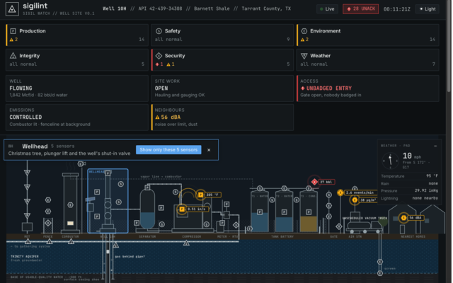

01Industrial sensors & monitoring
Built for the world's toughest environments
Sigilint is building a resilient mesh for moving alerts & data from sensors, cameras, drones, and human sources — into the control room, for real-time decision making and industrial operational intelligence.

Live demoWell Site Monitor →